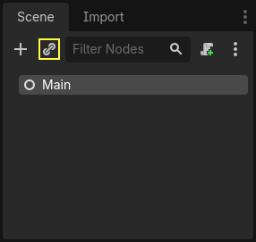
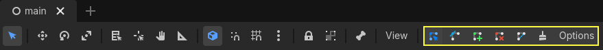
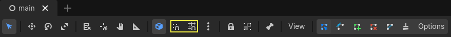
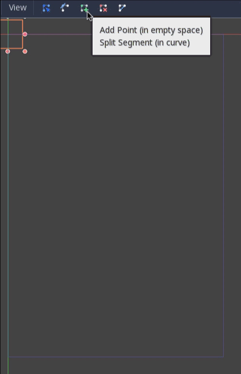

The main game scene
Now it's time to bring everything we did together into a playable game scene.
Create a new scene and add a Node named Main.
(The reason we are using Node instead of Node2D is because this node will
be a container for handling game logic. It does not require 2D functionality itself.)
Click the Instance button (represented by a chain link icon) and select your saved
player.tscn.

Now, add the following nodes as children of Main, and name them as shown:
Timer (named
MobTimer) - to control how often mobs spawnTimer (named
ScoreTimer) - to increment the score every secondTimer (named
StartTimer) - to give a delay before startingMarker2D (named
StartPosition) - to indicate the player's start position
Set the Wait Time property of each of the Timer nodes as follows (values are in seconds):
MobTimer:0.5ScoreTimer:1StartTimer:2
In addition, set the One Shot property of StartTimer to "On" and set
Position of the StartPosition node to (240, 450).
Spawning mobs
The Main node will be spawning new mobs, and we want them to appear at a random
location on the edge of the screen. Click the Main node in the Scene dock, then
add a child Path2D node named MobPath. When you select
Path2D, you will see some new buttons at the top of the editor:

Select the middle one ("Add Point") and draw the path by clicking to add the points at the corners shown. To have the points snap to the grid, make sure "Use Grid Snap" and "Use Smart Snap" are both selected. These options can be found to the left of the "Lock" button, appearing as a magnet next to some dots and intersecting lines, respectively.

Important
Draw the path in clockwise order, or your mobs will spawn pointing outwards instead of inwards!

After placing point 4 in the image, click the "Close Curve" button and your
curve will be complete.
Now that the path is defined, add a PathFollow2D
node as a child of MobPath and name it MobSpawnLocation. This node will
automatically rotate and follow the path as it moves, so we can use it to select
a random position and direction along the path.
Your scene should look like this:

Main script
Add a script to Main. At the top of the script, we use
@export var mob_scene: PackedScene to allow us to choose the Mob scene we want
to instance.
extends Node
@export var mob_scene: PackedScene
var score
using Godot;
public partial class Main : Node
{
// Don't forget to rebuild the project so the editor knows about the new export variable.
[Export]
public PackedScene MobScene { get; set; }
private int _score;
}
Click the Main node and you will see the Mob Scene property in the Inspector
under "Main.gd".
You can assign this property's value in two ways:
Drag
mob.tscnfrom the "FileSystem" dock and drop it in the Mob Scene property.Click the down arrow next to "[empty]" and choose "Load". Select
mob.tscn.
Next, select the instance of the Player scene under Main node in the Scene dock,
and access the Signals dock on the sidebar.
You should see a list of the signals for the Player node. Find and
double-click the hit signal in the list (or right-click it and select
"Connect..."). This will open the signal connection dialog. We want to make a
new function named game_over, which will handle what needs to happen when a
game ends. Type "game_over" in the "Receiver Method" box at the bottom of the
signal connection dialog and click "Connect". You are aiming to have the hit signal
emitted from Player and handled in the Main script. Add the following code
to the new function, as well as a new_game function that will set
everything up for a new game:
func game_over():
$ScoreTimer.stop()
$MobTimer.stop()
func new_game():
score = 0
$Player.start($StartPosition.position)
$StartTimer.start()
public void GameOver()
{
GetNode<Timer>("MobTimer").Stop();
GetNode<Timer>("ScoreTimer").Stop();
}
public void NewGame()
{
_score = 0;
var player = GetNode<Player>("Player");
var startPosition = GetNode<Marker2D>("StartPosition");
player.Start(startPosition.Position);
GetNode<Timer>("StartTimer").Start();
}
Now we'll connect the timeout() signal of each Timer node (StartTimer,
ScoreTimer, and MobTimer) to the main script. For each of the three
timers, select the timer in the Scene dock, open the Signals tab of the Node
dock, then double-click the timeout() signal in the list. This will open a new
signal connection dialog. The default settings in this dialog should be fine, so
select Connect to create a new signal connection.
Once all three timers have this set up, you should be able to see each timer
have a Signal connection for their respective timeout() signal, showing in
green, within their respective Signals tabs:
(For MobTimer):
_on_mob_timer_timeout()(For ScoreTimer):
_on_score_timer_timeout()(For StartTimer):
_on_start_timer_timeout()
Now we define how each of these timers operate by adding the code below. Notice
that StartTimer will start the other two timers, and that ScoreTimer
will increment the score by 1.
func _on_score_timer_timeout():
score += 1
func _on_start_timer_timeout():
$MobTimer.start()
$ScoreTimer.start()
// We also specified this function name in PascalCase in the editor's connection window.
private void OnScoreTimerTimeout()
{
_score++;
}
// We also specified this function name in PascalCase in the editor's connection window.
private void OnStartTimerTimeout()
{
GetNode<Timer>("MobTimer").Start();
GetNode<Timer>("ScoreTimer").Start();
}
In _on_mob_timer_timeout(), we will create a mob instance, pick a random
starting location along the Path2D, and set the mob in motion. The
PathFollow2D node will automatically rotate as it follows the path, so we
will use that to select the mob's direction as well as its position.
When we spawn a mob, we'll pick a random value between 150.0 and
250.0 for how fast each mob will move (it would be boring if they were
all moving at the same speed).
Note that a new instance must be added to the scene using add_child().
func _on_mob_timer_timeout():
# Create a new instance of the Mob scene.
var mob = mob_scene.instantiate()
# Choose a random location on Path2D.
var mob_spawn_location = $MobPath/MobSpawnLocation
mob_spawn_location.progress_ratio = randf()
# Set the mob's position to the random location.
mob.position = mob_spawn_location.position
# Set the mob's direction perpendicular to the path direction.
var direction = mob_spawn_location.rotation + PI / 2
# Add some randomness to the direction.
direction += randf_range(-PI / 4, PI / 4)
mob.rotation = direction
# Choose the velocity for the mob.
var velocity = Vector2(randf_range(150.0, 250.0), 0.0)
mob.linear_velocity = velocity.rotated(direction)
# Spawn the mob by adding it to the Main scene.
add_child(mob)
// We also specified this function name in PascalCase in the editor's connection window.
private void OnMobTimerTimeout()
{
// Create a new instance of the Mob scene.
Mob mob = MobScene.Instantiate<Mob>();
// Choose a random location on Path2D.
var mobSpawnLocation = GetNode<PathFollow2D>("MobPath/MobSpawnLocation");
mobSpawnLocation.ProgressRatio = GD.Randf();
// Set the mob's direction perpendicular to the path direction.
float direction = mobSpawnLocation.Rotation + Mathf.Pi / 2;
// Set the mob's position to a random location.
mob.Position = mobSpawnLocation.Position;
// Add some randomness to the direction.
direction += (float)GD.RandRange(-Mathf.Pi / 4, Mathf.Pi / 4);
mob.Rotation = direction;
// Choose the velocity.
var velocity = new Vector2((float)GD.RandRange(150.0, 250.0), 0);
mob.LinearVelocity = velocity.Rotated(direction);
// Spawn the mob by adding it to the Main scene.
AddChild(mob);
}
Important
Why PI? In functions requiring angles, Godot uses radians,
not degrees. Pi represents a half turn in radians, about
3.1415 (there is also TAU which is equal to 2 * PI).
If you're more comfortable working with degrees, you'll need to
use the deg_to_rad() and rad_to_deg() functions to
convert between the two.
Testing the scene
Let's test the scene to make sure everything is working. Add this new_game
call to _ready():
func _ready():
new_game()
public override void _Ready()
{
NewGame();
}
Let's also assign Main as our "Main Scene" - the one that runs automatically
when the game launches. Press the "Play" button and select main.tscn when
prompted.
Tip
If you had already set another scene as the "Main Scene", you can right
click main.tscn in the FileSystem dock and select "Set As Main Scene".
You should be able to move the player around, see mobs spawning, and see the player disappear when hit by a mob.
When you're sure everything is working, remove the call to new_game() from
_ready() and replace it with pass.
What's our game lacking? Some user interface. In the next lesson, we'll add a title screen and display the player's score.